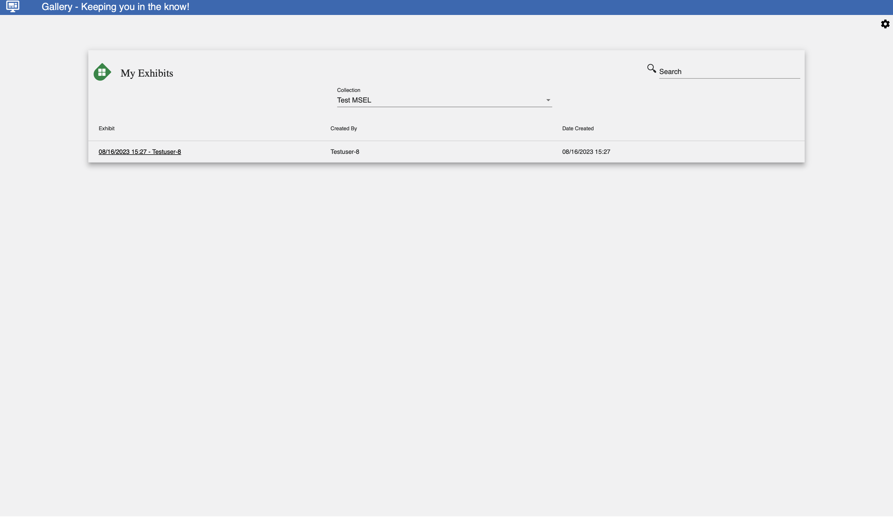
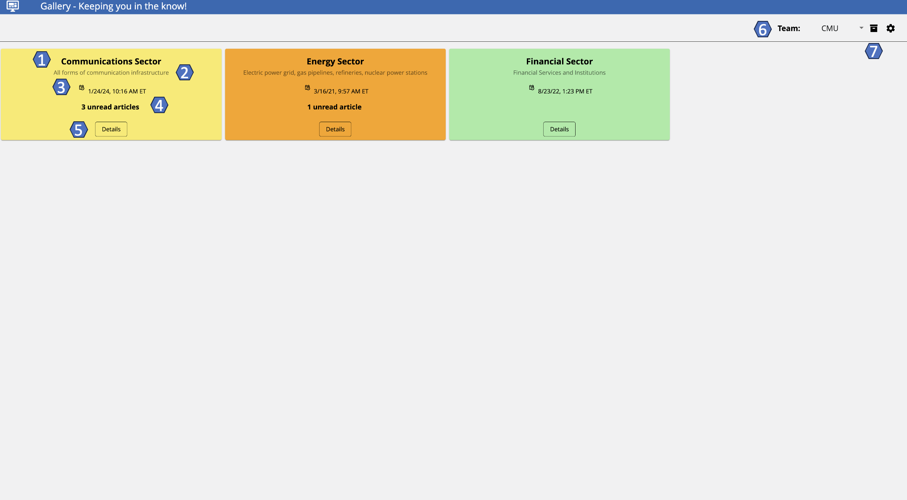
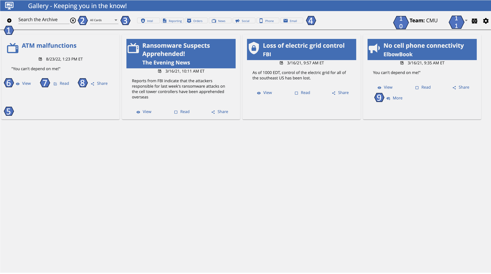
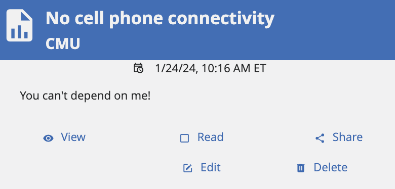
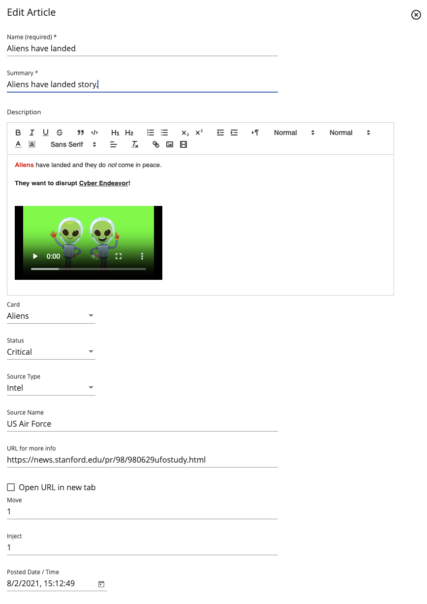
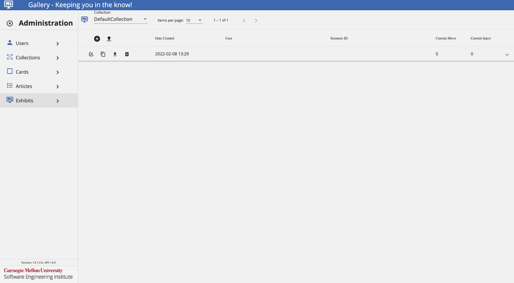
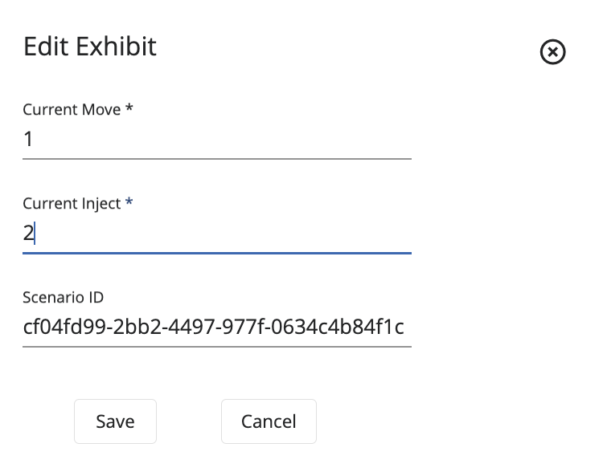
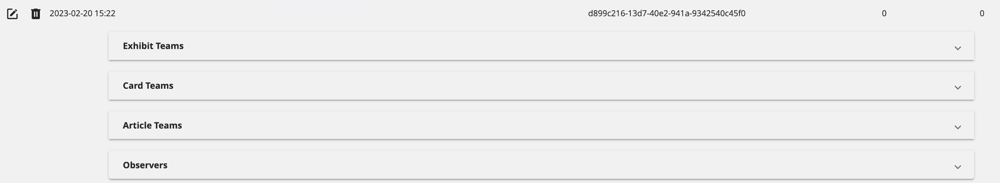
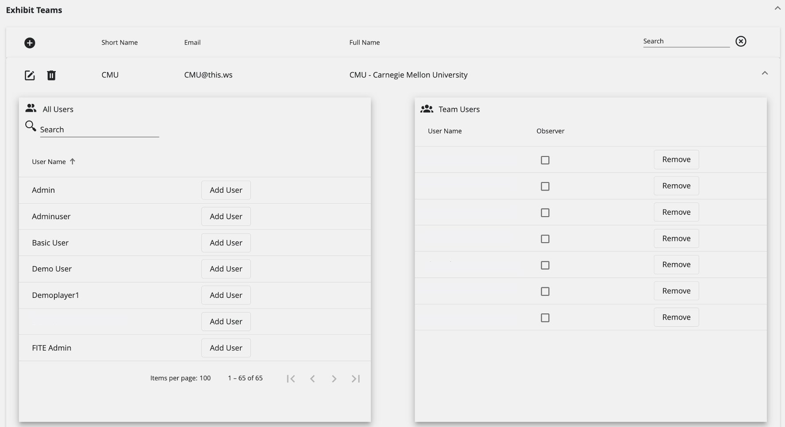
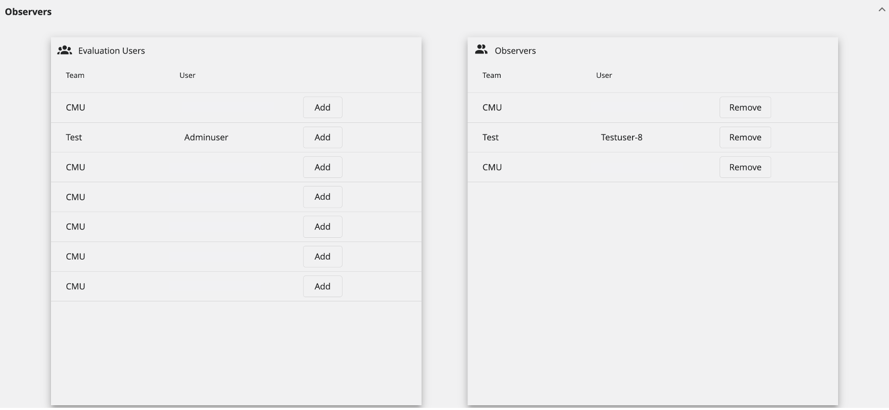

Gallery: Keeping You in the Know!
Gallery: Keeping You in the Know!
Overview
What is Gallery?
Gallery is a web application where participants receive incident information.
In the Gallery User Interface, there are two major functional sections:
- Gallery Wall: The dashboard that displays "cards" to help participants visualize the incident.
- Gallery Archive: A collection of information that contains relevant reporting, intelligence, news, and social media.
For installation, refer to these GitHub repositories.
User Guide
Gallery Landing Page
The landing page of Gallery provides a central approach to recopiling all collections and exhibits that the user is a participant of into just one display.

First, users should select the collection they want to access from the dropdown, then a list of exhibits will be shown where the user will be able to select the one desired to be accessed.
Search for an Exhibit
To search for an exhibit, follow these steps:
- Navigate to Gallery's landing page.
- Select a collection from the dropdown.
- Click on the Search Bar and add the name of the creator of the exhibit.
Gallery Wall
The Gallery Wall is a dashboard with red, orange, yellow, and green status indicators. Each of these cards have a specifc set of actions, which will help users throughout the in-game exercise.
- Red: Indicates a closed status.
- Orange: Indicates a critical status.
- Yellow: Indicates an affected status.
- Green: Indicates an open status.
The following image will show some important hotspots about the Gallery Wall. Reference the number on the hotspot to know more about each section.

Title
Hotspot 1:
The title of the card.
Description
Hotspot 2:
A brief description of the event.
Date Posted
Hotspot 3:
The date and time the card was last updated.
Unread Articles
Hotspot 4:
The number of articles left to read from the event.
Details
Hotspot 5:
Provides additional details than those provided in the Gallery Wall. All articles related to the event will be filtered and shown to provide more information.
Team Selection
Hotspot 6:
This feature enables a user who is part of a team, as well as an observer, to toggle back and forth between teams. When assigned an observer role, the user will be able to see how other teams progress during the exercise, as well as participate on their own team.
Wall & Archive Toggle
Hotspot 7:
By using this icon, users can toggle between the Gallery Wall and Gallery Archive.
Gallery Archive
The Gallery Archive is a collection of information that contains relevant reporting, intelligence, news, and social media data sources.
The following image will show some important hotspots about the Gallery Archive. Reference the number on the hotspot to know more about each section.

Add an Article
Hotspot 1:
Users assigned the appropriate permissions can add articles to the Archive related to the exercise current events.
To add an article, refer to this section Add Articles During an Exercise.
Search
Hotspot 2:
The archive contains all "move" data that has been shared up to this point in the exercise. Users can search, sort, and filter information in the archive.
To search the archive, enter the terms in the Search the Archive field. The search feature automatically narrows down the results.
Cards Filter
Hotspot 3:
Users can use this dropdown to further filter intelligence information. Users can sort the Gallery articles based on their card categories. This will be useful for users that are searching for information from a specific category.
Source Filters
Hotspot 4:
These articles come from different categories of sources: reporting, news, orders, phone, email, intel, and social media. Users can select one or multiple filters to display only the cards that belong to those filter categorizations.
Article Information
Hotspot 5:
The information in the Gallery Archive is displayed in articles. Each article contains the Title, Source Type, Source Name, and Date Posted.
For the information included on the article:
- Title: The title of the intelligence report.
- Source Type: The source of the intelligence report (News, Intel, Reporting, or Social Media).
- Source Name: The specific person or agency who supplied the intelligence.
- Date Posted: The date and timestamp of when the intelligence report was posted.
View
Hotspot 6:
View the full article in a pop up page or open the article in a new tab for better visualization.
Read
Hotspot 7:
After reading an article, mark it as read to keep track of new articles.
Share
Hotspot 8:
With this feature, users can share an article with other users using a mail service.
To share an article with another team, click Share. In the Share Article screen:
- Under Share with..., select a team.
- Under Email Contents..., make any edits to the Subject and Message of the article.
- Click Share.
More
Hotspot 9:
When enabled, attached documents with additional information will be provided for users to access and read.
Team Selection
Hotspot 10:
This feature enables a user who is part of a team, as well as an observer, to toggle back and forth between teams. When assigned an observer role, the user will be able to see how other teams progress during the exercise, as well as participate on their own team.
Wall & Archive Toggle
Hotspot 11:
By using this icon, users can toggle between the Gallery Wall and Gallery Archive.
Add Articles During an Exercise
Users with the appropriate ContentDeveloper permissions, can add articles to the Gallery Archive throughout the course of exercise events.
Assuming that the user has been granted the appropriate permissions by the exercise administrator, follow these steps to add an article during an exercise.

- On the Gallery Archive section, click on + to add an article.
- Fill the fields as necessary following the Data Format Table specifications.
Data Format Table
| Field | Data Type | Description | Example |
|---|---|---|---|
| Name | String | Name of the article | No cell phone connectivity |
| Summary | String | Short summary of the article | No cell phone connectivity after pass of Hurricane Delta |
| Description | Rich Text | Description with characteristics and details of the article | In a world driven by constant connectivity, the sudden absence of cell phone signals... |
| Url for more info | String | If additional details are necessary, provide the URL | www.bbcnews.com/hurricane-delta |
| Open URL in new tab | Boolean | Select if URL provided should be opened in a new tab | True |
| Card | Dropdown Text | Article's classification amongst Gallery cards | Communications Sector |
| Status | Dropdown Text | Status of how the article affects the exercise situation | Affected |
To save these settings, click Save.
After creating your article, it will be displayed in the Gallery Archive in the following way.

Edit an Article
To edit an article, follow these steps:
- On the Gallery Archive section, select the article to be edited and click on the Edit Icon on the article's card.
- Here, users will be prompted the same article's edit component as when adding a new article.
- After doing all the necessary edits, click Save.
Delete an Article
To delete an article, follow these steps:
- On the Gallery Archive section, select the article to be deleted and click on the Trash Can Icon on the article's card.
Administrator Guide
Users
The following image shows the Users Administration Page. Here, administrators can add and delete users. Additionally, administrators will be able to assign the necessary permissions to each user.
The available permissions are:
- System Admin: Permission that will grant a user all administration privileges on the Gallery application.
- Content Developer: Permission to manage other Gallery admin pages except the Users admin page and their permissions.
Most users won't have any permissions assigned in this application.

Add a User
Assuming that the user has been granted the appropriate permissions by the exercise admnistrator, follow these steps to add a user.

- Under the Users Administration View, click Add User.
- Fill the fields as necessary following the Data Format Table specifications.
Data Format Table
| Field | Data Type | Description | Example |
|---|---|---|---|
| Name | String | Name or username that identifies the user | user-1 |
| ID | guid | Unique ID for the user | 9dd4e3d8-5098-4b0a-9216-697cda5553f8 |
| String | User's email contact | user@this.ws |
To save these settings, click Save and select the desired permissions to be assigned by clicking on the checkbox next to the user.
Edit User's Information
To edit a user, follow these steps:
- Click on the Settings Cog.
- Navigate to the Users tab.
- Select the user to be edited and click on the Edit Icon next to the user.
- Here, users will be prompted the same user's edit component as when adding a new user.
- After doing all the necessary edits, click Save.
Delete a User
To delete a user, follow these steps:
- Click on the Settings Cog.
- Navigate to the Users tab.
- Select the user to be deleted and click on the Trash Can Icon next to the user.
Collections
The following image shows the Collections Administration Page. Here, administrators can add, upload, download, copy, and delete collections. These are where the articles will be assigned to, in the case there are multiple exercises running at the same time.

Add a Collection
Assuming that the user has been granted the appropriate permissions by the exercise administrator, follow these steps to add a collection.

- Under the Collections Administration View, click + Icon.
- Fill the fields as necessary following the Data Format Table specifications.
Data Format Table
| Field | Data Type | Description | Example |
|---|---|---|---|
| Name | String | Name of the collection | NCIS Demonstration |
| Description | String | Details, characteristics and information of the collection | This is a collection created for demo purposes. |
To save these settings, click Save.
Edit a Collection
To edit a collection, follow these steps:
- Click on the Settings Cog.
- Navigate to the Collections tab.
- Select the collection to be edited and click on the Edit Icon next to the collection.
- Here, users will be prompted the same collection's edit component as when adding a new collection.
- After doing all the necessary edits, click Save.
Delete a Collection
To delete a collection, follow these steps:
- Click on the Settings Cog.
- Navigate to the Collections tab.
- Select the collection to be deleted and click on the Trash Can Icon next to the collection.
Upload a Collection
Assuming that the user has been granted the appropriate permissions by the exercise administrator, follow these steps to upload a collection.
- Click on the Settings Cog.
- Navigate to the Collections tab.
- Click on the Up Arrow next to the + Icon.
- Select the collection JSON file to be uploaded.
Download a Collection
Assuming that the user has been granted the appropriate permissions by the exercise administrator, follow these steps to download a collection.
- Click on the Settings Cog.
- Navigate to the Collections tab.
- Click on the Down Arrow next to the collection to be downloaded.
- Look for the JSON file in your Downloads folder.
Copy a Collection
Assuming that the user has been granted the appropriate permissions by the exercise administrator, follow these steps to copy a collection.
- Click on the Settings Cog.
- Navigate to the Collections tab.
- Click on the Copy Icon next to the collection to be copied.
- Look for the collection name with the user's name.
Cards
The following image shows the Cards Administration Page. Here, administrators can add and delete cards. These are the different cards presented in the Gallery Wall and where different articles related to that card can be found.

Add a Card
Assuming that the user has been granted the appropriate permissions by the exercise administrator, follow these steps to add a card.

- Under the Cards Administration View, click Add Card.
- Fill the fields as necessary following the Data Format Table specifications.
Data Format Table
| Field | Data Type | Description | Example |
|---|---|---|---|
| Name | String | Name of the card | Information Technology Sector |
| Description | String | Details, characteristics and information of the card | This card is created to provide additional information related to the IT sector. |
| Collection | Dropdown Text | Select the collection this card should be part of | Demonstration #1 |
To save these settings, click Save.
Edit a Card
To edit a card, follow these steps:
- Click on the Settings Cog.
- Navigate to the Cards tab.
- Select the card to be edited and click on the Edit Icon next to the card.
- Here, users will be prompted the same card's edit component as when adding a new card.
- After doing all the necessary edits, click Save.
Delete a Card
To delete a card, follow these steps:
- Click on the Settings Cog.
- Navigate to the Cards tab.
- Select the card to be deleted and click on the Trash Can Icon next to the card.
Articles
The following image shows the Articles Administraton Page. Here, administrators can add and delete articles. These are different articles providing supplemental information from different sources to keep the exercise going.

Add an Article
Assuming that the user has been granted the appropriate permissions by the exercise administrator, follow these steps to add an article.

- Under the Article Administration View, click Add Article.
- Fill the fields as necessary following the Data Format Table specifications.
Data Format Table
| Field | Data Type | Description | Example |
|---|---|---|---|
| Name | String | Name of the article | Hurricane Delta has landed in Fort Myers |
| Summary | String | Short summary and details of the article | Hurricane Delta has caused major damages |
| Description | Rich Text | Details, characteristics and information of the article | Hurricane Delta, Category 5 hurricane, has caused major damages in Fort Myers... |
| Card | Dropdown Text | Select the card this article should be categorized with | Energy Sector |
| Status | Dropdown Text | Select the article's status on how it affects the exercise | Critical |
| Source Type | Dropdown Text | Select the source or author type of the article | Intel |
| Source Name | String | Name or author of the article | BBC News |
| URL for more info | String | URL if additional information is provided to participants | www.bbcnews.com/hurricane-delta |
| Open URL in new tab | Boolean | If URL is provided, select if it should be opened in a new tab | True |
| Move | Integer | Move number this article should be part of | 1 |
| Inject | Integer | Inject number this article should be part of | 1 |
| Posted Date/Time | Datetime | Date/Time when this article was posted | 08/02/2021, 15:12:49 |
To save these settings, click Save.
Edit an Article
To edit an article, follow these steps:
- Click on the Settings Cog.
- Navigate to the Articles tab.
- Select the article to be edited and click on the Edit Icon next to the article.
- Here, users will be prompted the same article's edit component as when adding a new article.
- After doing all the necessary edits, click Save.
Delete an Article
To delete an article, follow these steps:
- Click on the Settings Cog.
- Navigate to the Articles tab.
- Select the article to be deleted and click on the Trash Can Icon next to the article.
Exhibits
The following image shows the Exhibits Administration Page. Here, administrators configure the actual exercise to be run based on the teams, collections and articles previously configured.

Add an Exhibit
Assuming that the user has been granted the appropriate permissions by the exercise administrator, follow these steps to add an exhibit.

- Under the Exhibit Administration View, click + Icon.
- Fill the fields as necessary following the Data Format Table specifications.
Data Format Table
| Field | Data Type | Description | Example |
|---|---|---|---|
| Current Move | Integer | Number of the current move | 1 |
| Current Inject | Integer | Number of the inject within the move | 2 |
| Scenario ID | guid | ID value for the scenario | Automatically generated by the system |
To save these settings, click Save.
Edit an Exhibit
To edit an exhibit, follow these steps:
- Click on the Settings Cog.
- Navigate to the Exhibits tab.
- Select the exhibit to be edited and click on the Edit Icon next to the exhibit.
- Here, users will be prompted the same exhibit's edit component as when adding a new exhibit.
- After doing all the necessary edits, click Save.
Delete an Exhibit
To delete an exhibit, follow these steps:
- Click on the Settings Cog.
- Navigate to the Exhibits tab.
- Select the exhibit to be deleted and click on the Trash Can Icon next to the exhibit.
Upload an Exhibit
To upload an exhibit, follow these steps:
- Click on the Settings Cog.
- Navigate to the Exhibits tab.
- Click on the Up Arrow next to the + Icon.
- Select the exhibit JSON file to be uploaded.
Note: When adding a new exhibit, a new collection with the uploaded exhibit will be created. To view the uploaded exhibit, navigate to the collection using the dropdown and select the collection with the same name as the file uploaded.
Download an Exhibit
To download an exhibit, follow these steps:
- Click on the Settings Cog.
- Navigate to the Exhibits tab.
- Click on the Down Arrow next to the exhibit to be downloaded.
- Look for the JSON file in your Downloads folder.
Copy an Exhibit
To copy an exhibit, follow these steps:
- Click on the Settings Cog.
- Navigate to the Exhibits tab.
- Click on the Copy Icon next to the exhibit to be copied.
- Look for the exhibit name with the user's name.
Configure an Exhibit
To configure an exhibit to be used for an exercise, administrators will need to add Exhibit Teams, Card Teams, Article Teams, as well as assign the respective Observers (if desired). To do this, follow these steps.

Exhibit Teams
To add a team to the Exhibit, follow these steps.

- Click on the + icon.
- Fill the fields as necessary following the Data Format Table specifications.
Data Format Table
| Field | Data Type | Description | Example |
|---|---|---|---|
| Name | String | Full name of the team | Carnegie Mellon University |
| Short Name | String | Short name of the team, such as an acronym | CMU |
| String | Team's email contact | sei@cmu.edu |
To save these settings, click Save.
To configure a team, follow these steps.

- Select the team to be configured and click on it to expand its configuration details.
- Under the All Users tab, users that have not been assigned to the team will be shown. To add them to the team, click on Add User.
- Under the Team Users tab, users that have already been assigned to the team will be shown. To remove a user from the team, click on Remove.
- If desired, check the Observer checkbox to assign that role to the user during the exercise.
Card Teams
To add a Team Card to the Exhibit, follow these steps.

- Click on the + on the Card Teams section.
- Fill the fields as necessary following the Data Format Table specifications.
Data Format Table
| Field | Data Type | Description | Example |
|---|---|---|---|
| Team | Dropdown Text | Team the card should be part of | CMU - Carnegie Mellon University |
| Card | Dropdown Text | Gallery card to be assigned | Communications Sector |
| Move | Integer | Move number the card is part of | 1 |
| Inject | Integer | Inject number the card is part of | 2 |
| Is Shown On Wall | Boolean | Select whether the card should be shown on the Gallery Wall for the team | True |
| Can Post New Articles | Boolean | Select whether the team can add new articles to this card | True |
To save these settings, click Save.
Article Teams
To add an article to a team, follow these steps.

- Select the Card to be configured.
- Under the Exhibit Teams tab, teams that haven't been assigned to an article will be shown. To add them to the Article Teams, click on Add.
- Under the Article Teams tab, teams that have already been assigned will be shown. To remove a team, click on Remove.
Observers
To assign the Observer Role to a user:

- Under Evaluation Users, search for the desired user.
- Once the user has been found, click on Add.
To remove the Observer Role from a user:
- Under Observers, search for the desired user.
- Once the user has been found, click on Remove.
Glossary
The following glossary provides a brief definition of key terms and concepts as they are used in the context of the Gallery application.
- Articles: A piece of writing that typically relates to a particular topic.
- Cards: Groups articles into their respective categories, the categories can be defined in the administration panel.
- Collection: A set of articles.
- Content Developer Permission: Will grant a user the ability to manage other Gallery administration pages, except the users administration page and their permissions.
- Email Filter: Information that was gathered from messages distributed by electronic means.
- Exhibit: The scheduled instance of a collection.
- Gallery: Web application where participants receive incident information.
- Gallery Archive: A collection of information that contains relevant information from reporting, intelligence, news, and social media sources.
- Gallery Wall: The dashboard that displays "cards" to help participants visualize the incident.
- Intel Filter: Information that was acquired by an intelligence agency.
- News Filter: Information that was acquired by a broadcast or published report of news.
- Observer Role: Individuals who are tasked with impartially and objectively monitoring teams during an exercise.
- Orders Filter: Information that was gathered based on a decision issued by an authoritative order.
- Phone Filter: Information that was gathered from SMS messages and phone calls.
- Reporting Filter: Information that was gathered from a document that provides information in an organized and objective way, without analysis or recommendations.
- Social Media Filter: Information that was acquired from multiple users on a social media platform.
- System Admin Permission: Will grant a user all administration privileges on the Gallery application.